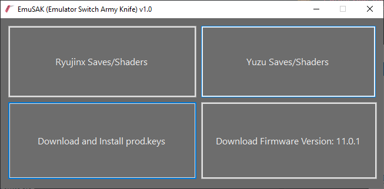

Bounties
If you wish to see the videos larger, right click them and click "View Video"
Click any underlined title to go to the appropriate Github page
-
Yuzu Updater
An easy to use Windows updater for Yuzu Early Access.
-
DODI Downloader
An easy to use downloader for DODI repacks. Straight from the source so support DODI if you can.
-
FitGirl Downloader
An easy to use downloader for FitGirl repacks. Straight from the source so support FitGirl if you can.
-
Emulator Guides
General emulator guides, made to help users set up and play games for various systems.
Yuzu Setup Ryujinx Setup RPCS3 Setup -

EmuSAK
The Emulator Switch Army Knife is a tool which allows you to download saves and shaders for switch emulators.